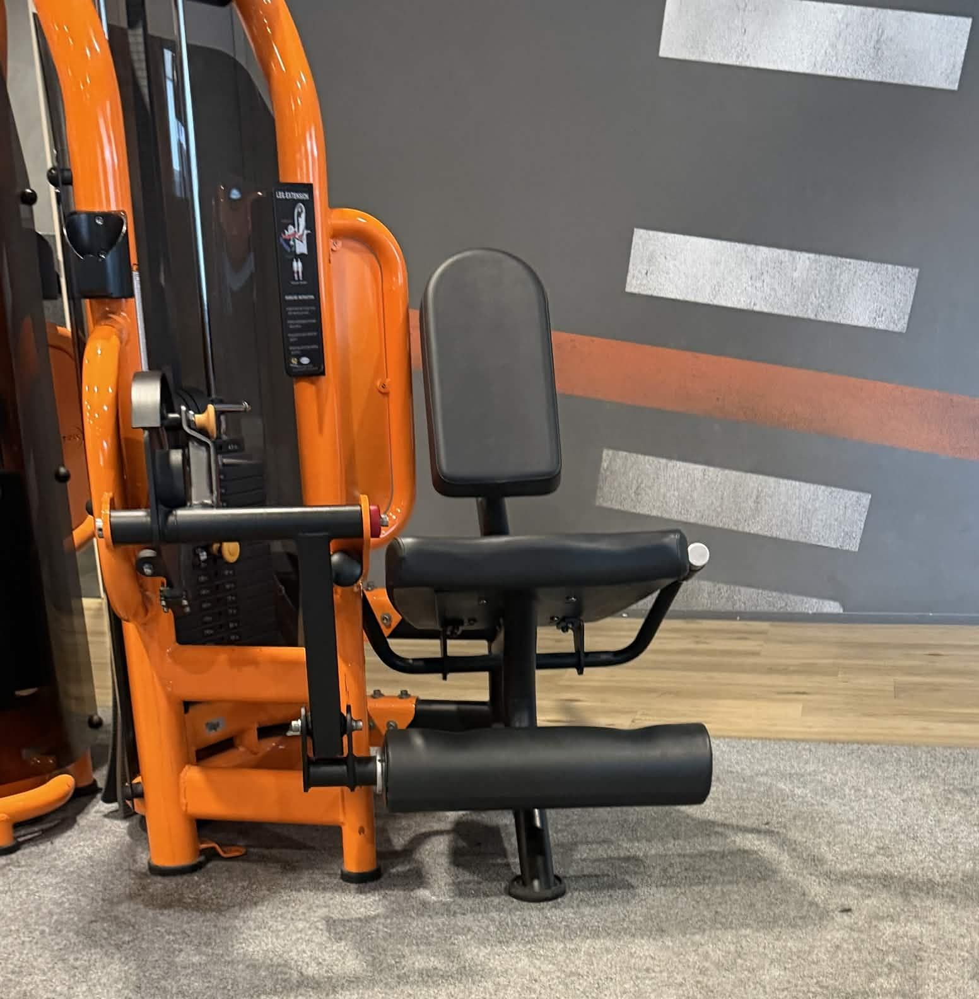
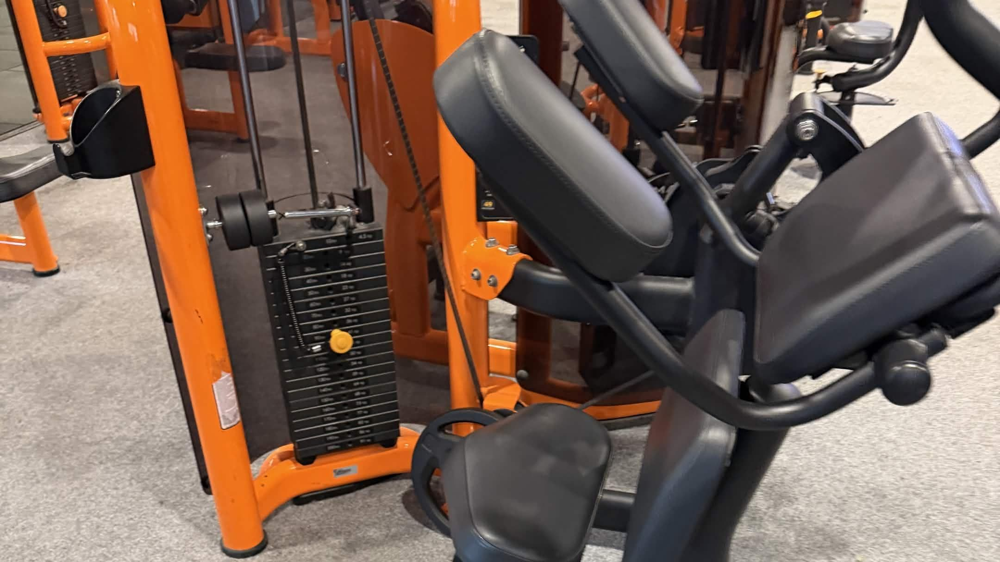

Leg press
Duw het gewicht met je benen weg en beweeg gecontroleerd terug.
2 sets · 8–12 herhalingen · 90 seconden rust
Ook met een druk gezinsleven kun je tijd vrijmaken voor een korte training. Deze workout richt zich op de benen en buikspieren.
Duw het gewicht met je benen weg en beweeg gecontroleerd terug.
2 sets · 8–12 herhalingen · 90 seconden rust

Strek je onderbenen rustig en laat het gewicht weer zakken.
2 sets · 8–12 herhalingen · 90 seconden rust

Span je buikspieren aan en voer je buikspieroefeningen rustig uit.
2 sets · 10–15 herhalingen · 60 seconden rust
| Oefening | Sets | Herhalingen | Rust |
|---|---|---|---|
| Leg press | 2 | 8–12 | 90 sec. |
| Leg extension | 2 | 8–12 | 90 sec. |
| Buikspieren | 2 | 10–15 | 60 sec. |